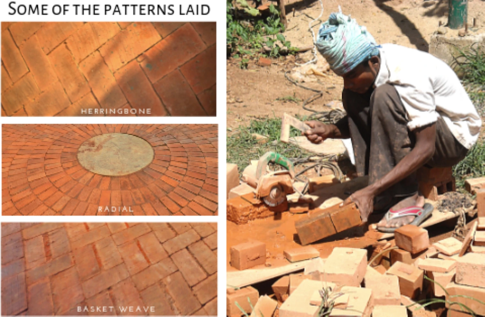
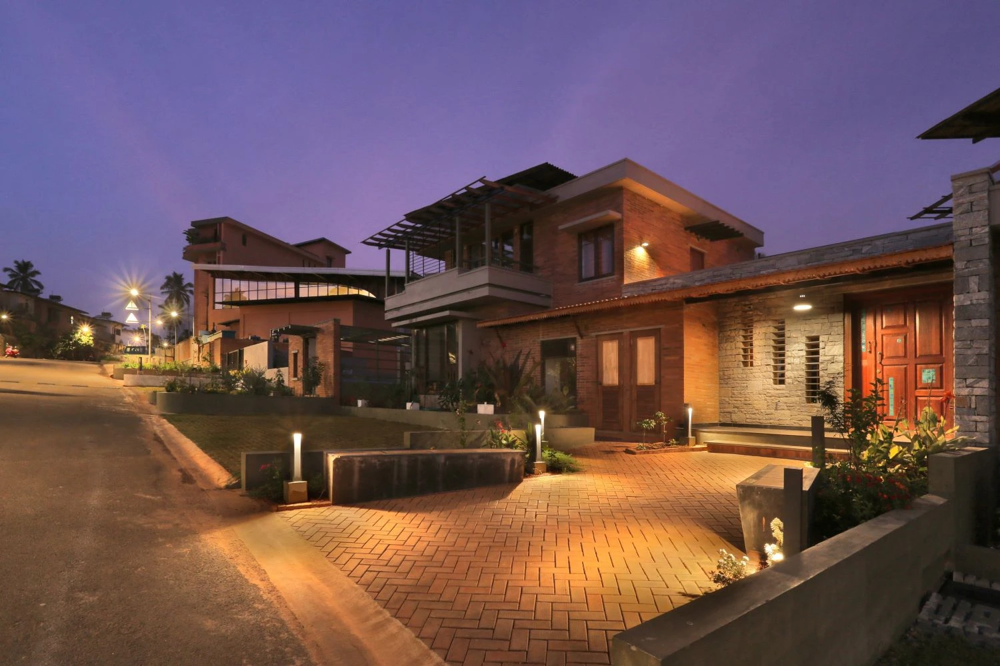
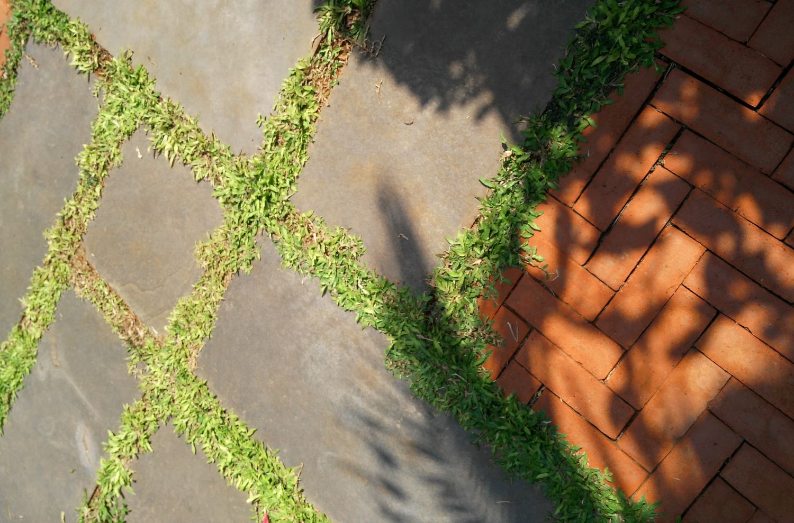
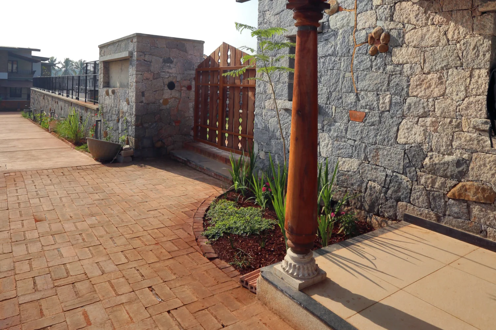
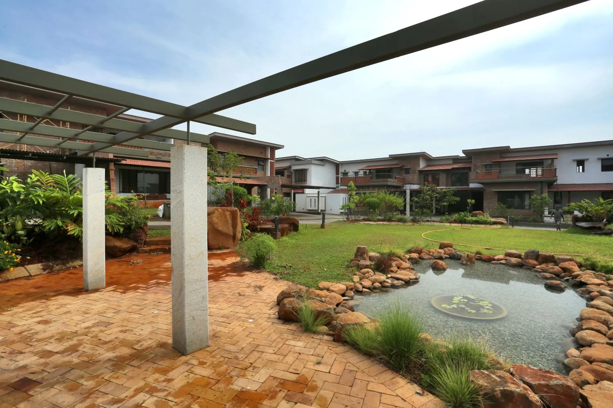
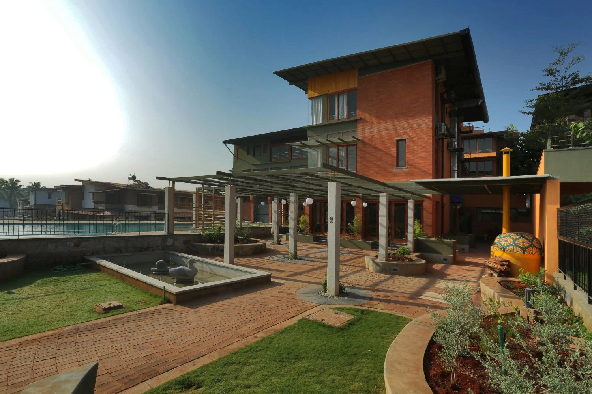
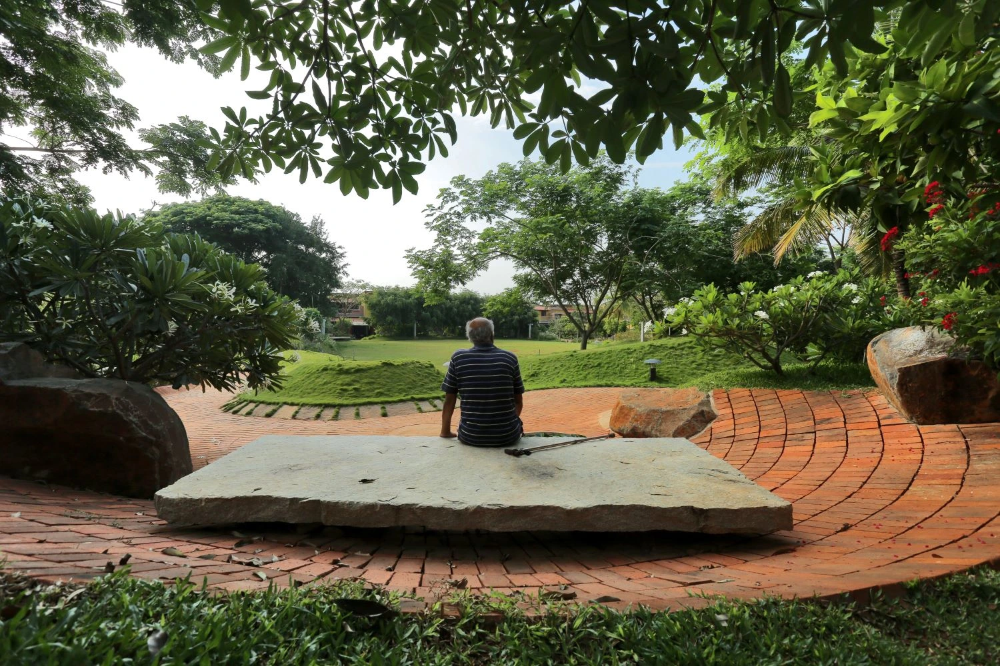

Materials
Materials
This article is a clone from the original GoodEarth Connect catalog. View the original post at:
Brick pavers: Designing alluring pathways ↗
Brick is one of the most prevalent materials used in construction. It’s cost effective, strong, displays high fire resistance and is durable. Hence they are widely popular as pavers. Besides, the deep red and brown hues of the hardy material add a rustic charm to the space. They are aesthetic and versatile as they can be laid in many different ways.
Benefits of paving a space with brick
Leveraging the functional benefits of brick pavers is an excellent way to revamp a space sustainably. Here are the key advantages of paving outdoor spaces with brick:
1
Anti-skid surface
A naturally-textured surface with abrasive characteristics, brick pavers are very beneficial in outdoor areas and other wet places, as it ensures safety and security as an anti-slip surface.
2
Retention of colour
The rich hues of clay do not fade with time. In fact, as there are no artificial pigments added, the pavers are not adversely affected by the ultraviolet rays of the sun. Retaining their colour, the bricks age with time gracefully.
3
Durability
Brick pavers are strong and can withstand heavy loads, as they are fired in a kiln at higher temperatures. It can resist extreme wind and humidity. Having an extreme heat retardant quality, it is resistant to sears and burns caused by dropping hot objects. Over time probable stains on the bricks blend well with the natural colour palette of the brick and heightens its old-world charm.
4
Environment-friendly
Made out of natural clay, it’s eco-friendly and recyclable. The dents, rough edges and faded stains add a unique aged appeal to the reclaimed bricks and add character to the space.
5
Flexible integrity
Compared to concrete pavers, brick pavers are far more flexible in maintaining its inter-locking ability. When there is a movement in the underlying earth, the brick paving spontaneously adjusts itself, preventing cracking of the entire pavement.
6
Easy installation
Brick paving can be done easily despite the weather conditions, making it an efficient choice for construction planning.
Maximizing its aesthetic appeal, you will find the application of brick pavers in varied, creative ways at GoodEarth residential communities. Here is how they bring spaces to life:

A striking entryway

Warm tones of brick laid in a zig-zag Herringbone pattern marks an exclusive entryway. The earthiness offers the first glimpse of what lies ahead.
Breaking the monotony

To create an element of surprise and break the monotony, sometimes we interplay with two natural materials and create a perfect harmony.
Defining a pathway

In a large open space, defining a path that leads to the entrance/exit is an efficient way of blending functionality and aesthetics.
By the waterbody

Taking full advantage of the textured surface of brick and its hardy nature, paving it around a waterbody or a swimming pool is a practical choice.
Earthiness continues outdoors

Interrelating the façade to its outdoor flooring, the hues perfectly complement each other.
A design feature in the park

Deep red tones of the hardy brick laid offer a perfect contrast to the soft scape of lush green of the park.